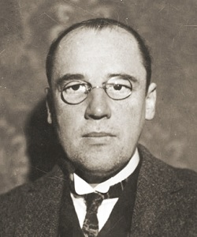

Le tapis de Sierpinski inventé en 1916, vient du nom de Wacław Sierpiński (un mathématicien polonais),son principe est d'obtenir une fractale à partir d'un carré. Le tapis se fabrique en découpant le carré en neuf carrés égaux, en supprimant la pièce centrale, et en appliquant cette procédure indéfiniment aux huit carrés restants. Qui divisera ensuite le grand carré de base en plein de petits carrés.
Le triangle de Sierpiński, encore nommé : Mandelbrot , à été aussi inventé par Wacław Sierpiński en 1915 (donc juste avant le tapis). C'est aussi une fractale qui peut s'obtenir à partir d'un triangle rempli pour commencer, ensuite celui-ci est divisé en quatres triangles dont un non-rempli, ainsi de suite il y'aura de plus en plus de triangles en divisant l'exemplaire d'avant en deux. À chaque répétition le triangle reste donc de même taille, mais est moins plein que le triangle d'avant. Comme on peut le voir ci-dessous:

J'ai donc choisi de faire le triangle de Sierpinski, j'ai pris pas mal de temps avant que le programme marche, car si on changait pas tout ce qu'il fallait modifier cela ne marchait pas, j'ai donc modifier F qui nous donnera "F-G+F+G-F" et rajouter la variable G qui va donner "GG". Au début j'ai juste changé ça, ce qui me dessinait des triangles, certes, mais sur une ligne, et c'est là que j'ai compris mon erreur, je devais modifier ligne 56 en mettant 'F-G-G',3 et 40 et 120 pour que ça me le fasse dans le triangle lui même.
lien vers projet personnel: